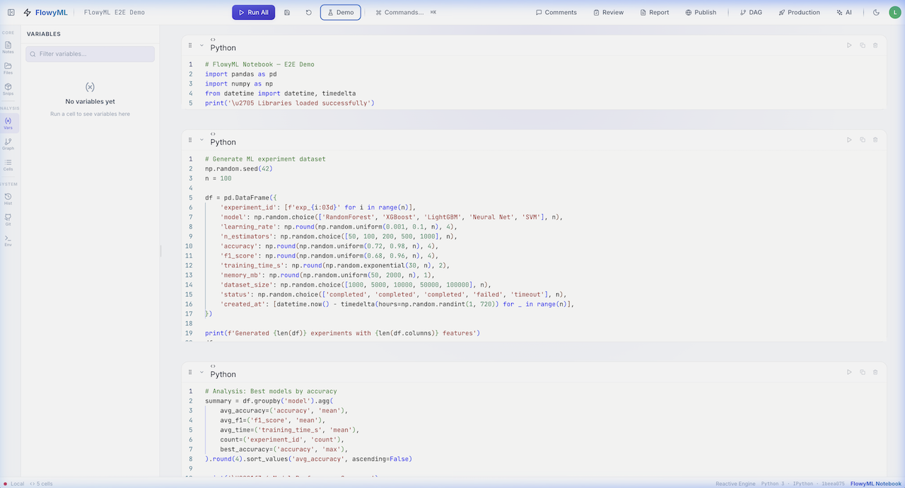
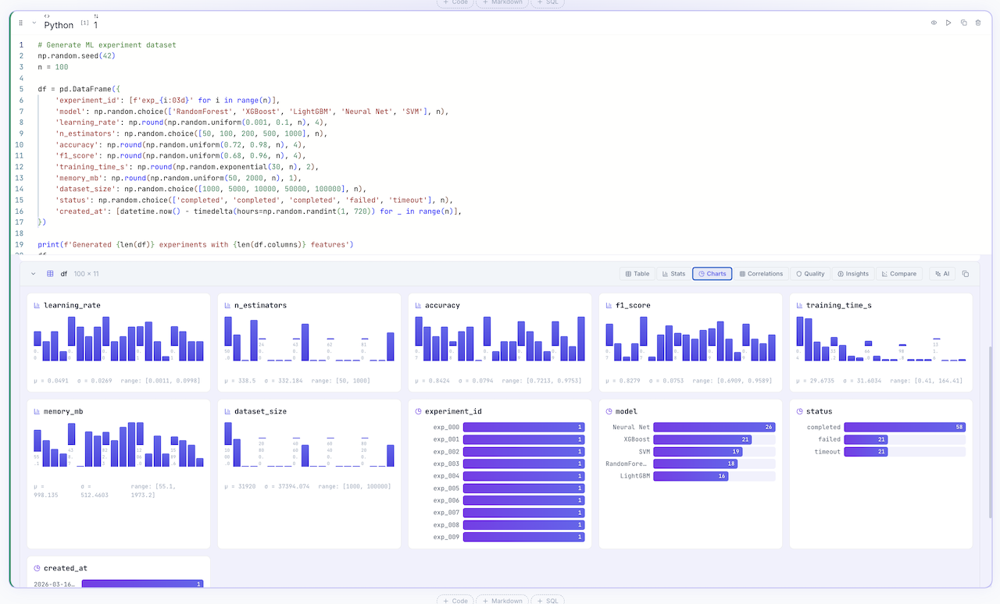

FlowyML Notebook
Your Analysis. One Reactive Engine.
FlowyML Notebook is a DAG-powered reactive notebook that replaces Jupyter for production ML. Write Python, get automatic dependency tracking, and ship to pipelines — without changing a single line of code.
No cloud lock-in. No JSON diffs. No stale state. Just pure Python notebooks that run, react, and deploy.
 Get Started
Get Started Feature Tour
Feature Tour
Your Notebook. Reimagined. 

How It Works
-
Reactive DAG
Every cell is a node in a dependency graph. Change a variable → only dependent cells re-execute. Automatically. Always consistent.
-
Pure Python
Notebooks are standard
.pyfiles. Clean diffs, importable logic, full linting support. No more JSON noise. -
Rich Exploration
Every DataFrame gets automatic profiling — stats, charts, correlations, outlier detection, and ML-ready insights. Zero code.
-
Ship to Production
One-click deploy as API, Docker, web app, or FlowyML pipeline. From notebook to production in seconds.
-
AI Assistant
Generate code, debug errors, and explain data patterns — context-aware, powered by OpenAI or Google AI.
-
Git-Native
Full GitHub integration — branch, version, collaborate. No proprietary cloud. No database. Just Git.
See It In Action


Built For
-
Data Scientists
Rich exploration, reactive execution, and ML insights — the notebook you wished Jupyter was.
-
ML Engineers
Pipeline promotion, asset tracking, and deployment — ship models from your notebook to production.
-
Teams
GitHub collaboration, shared recipes, inline comments — work together without cloud vendor lock-in.
-
Enterprises
Self-hosted, API-driven, FlowyML ecosystem integration — production-grade infrastructure from day one.
Why Switch From Jupyter?
| Jupyter | FlowyML Notebook | |
|---|---|---|
| Execution | Run cells in any order → stale state | Reactive DAG → always consistent |
| File format | .ipynb JSON → merge nightmare |
.py files → clean Git diffs |
| Collaboration | None built-in | GitHub-native branching & versioning |
| Deployment | Copy-paste to scripts | One-click pipeline, API, or app |
| Data exploration | Raw text output | Rich profiling, charts, ML insights |
| Code reuse | Copy between notebooks | 39 built-in recipes + shared hub |
Quick Start
Your browser opens. Start building.  Full Getting Started Guide
Full Getting Started Guide
Open Source. Apache 2.0 Licensed. Self-hosted. No vendor lock-in.